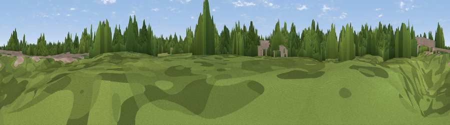

Priory Gardens
#44400 in England · top 97% of its area beats it · near SaleWhere it is
The exact computed spot (SJ 79801 92698). Click the marker for map links.
The view, rendered

A 360° render of this exact spot computed from the terrain model, tree cover and land cover — summer colours, afternoon light, calibrated against photographs of famous viewpoints. Real trees, hedges and buildings will differ in detail.
The panorama
Grey silhouette: terrain skyline in each direction (720 bearings, Earth curvature and refraction included). Dashed green: skyline with trees (+15 m) and buildings (+8 m) as obstacles. Blue strip: how far the ground is visible on each bearing.
Where the view opens
Wedge length = distance to the farthest visible ground on that bearing (vegetation-aware). Rings at 10, 25 and 50 km.
What fills the view
61% woodland · 25% built-up · 14% grassland
Angular shares of the visible panorama (visual magnitude), not map area. Landscape diversity 0.41 (0–1 Shannon).
Key numbers
More beautiful places nearby
The staircase of upgrades: each row has a higher view potential than everything closer. Driving times are estimates from straight-line distance, calibrated against real road routing — check an actual route before setting out.
| Place | Direction | Drive | Score |
|---|---|---|---|
| Carrington Moss | WSW · 6 km | ~12 min | 31.5 |
| Viewpoint near Cadishead | W · 8 km | ~16 min | 36.4 |
| Viewpoint near Pendlebury | N · 9 km | ~18 min | 43.9 |
| Viewpoint near Pendlebury | N · 10 km | ~20 min | 46.3 |
| Viewpoint near Prestwich | N · 10 km | ~20 min | 47.3 |
| Viewpoint near Hollins Green | W · 12 km | ~22 min | 60.7 |
| Viewpoint near Culcheth | W · 13 km | ~24 min | 63.6 |
| Viewpoint near Haughton Green | E · 15 km | ~26 min | 64.0 |
53.43068, -2.30547 · source: osm peak · position refined by local search. Computed location — check access rights before visiting.